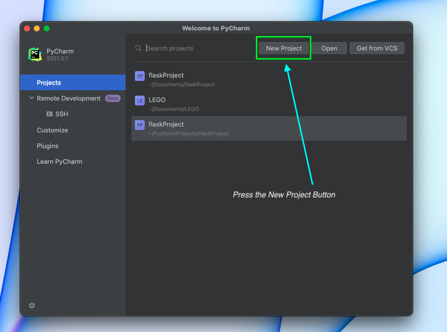
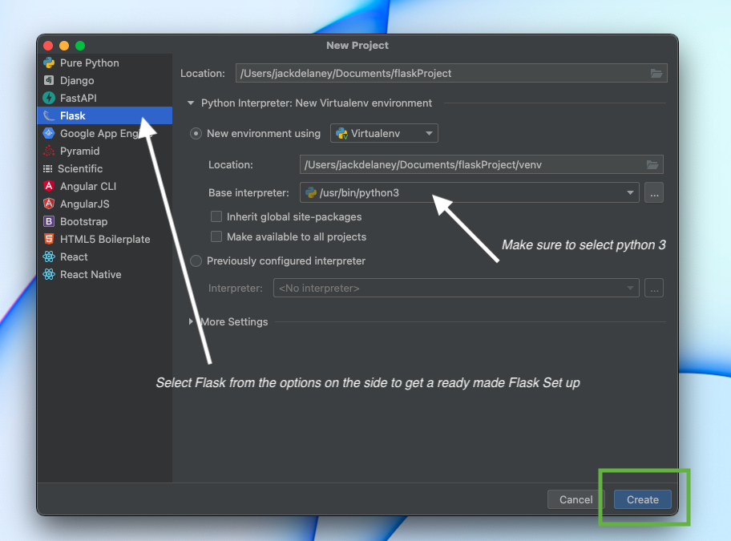
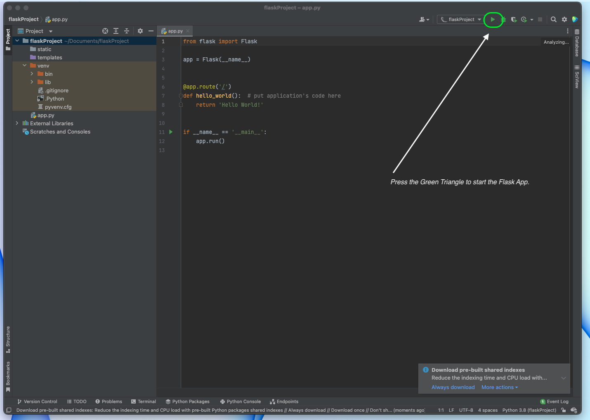
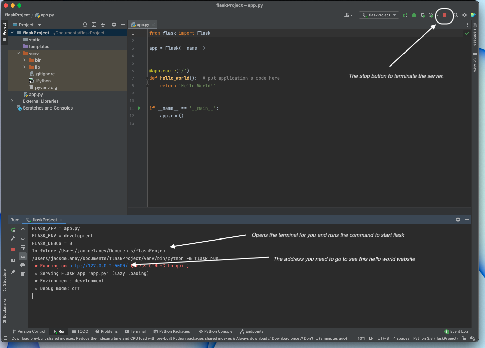
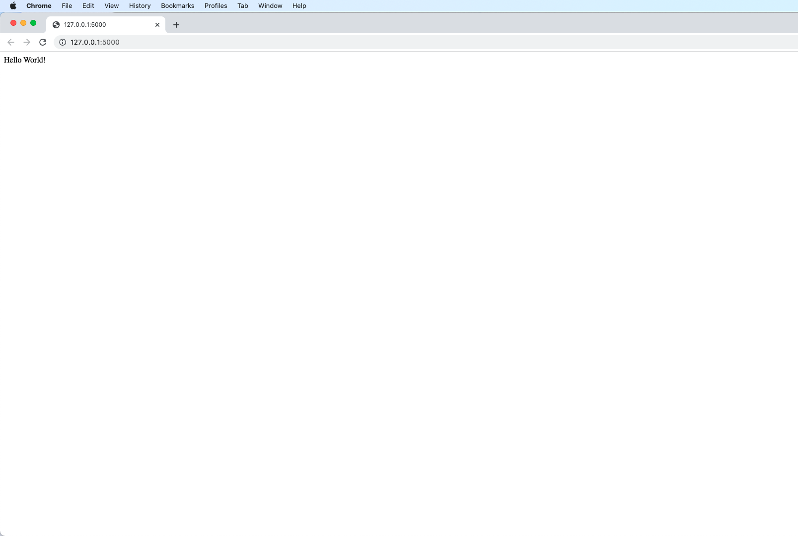
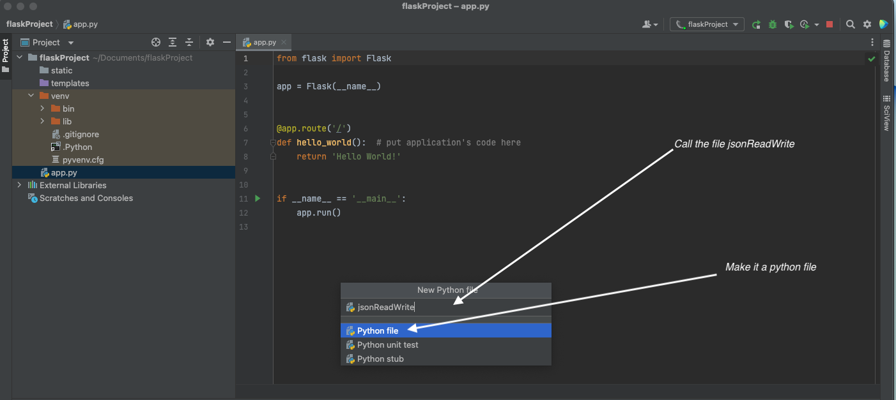
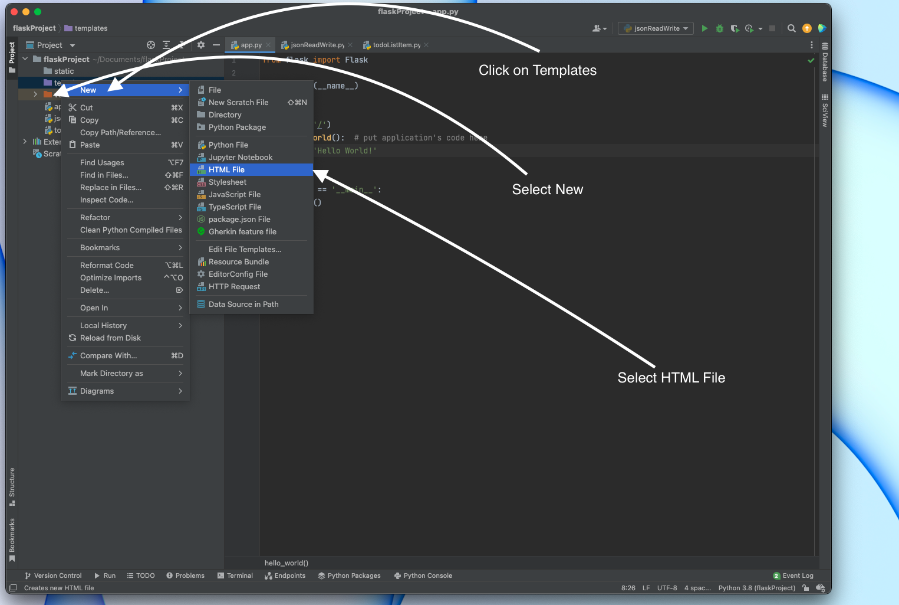
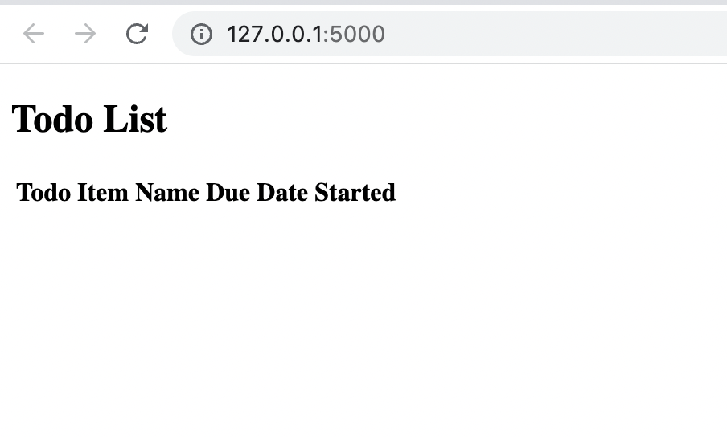
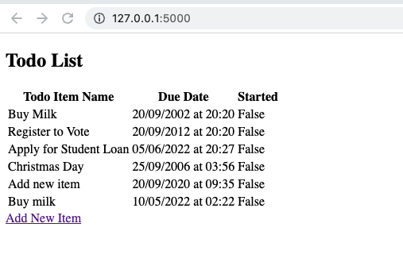
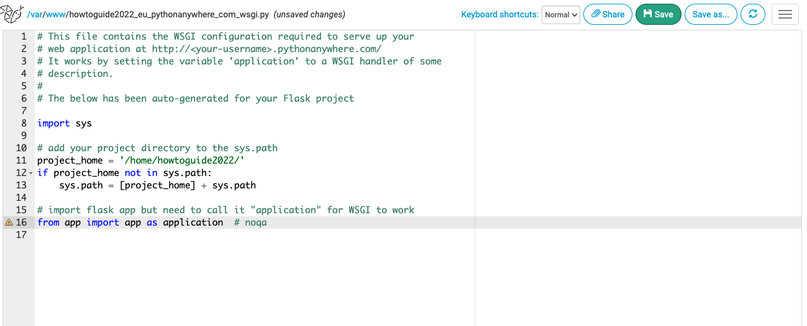

Flask is a Python Library (think of an HGV trailer) that extends the python language to allow us to create amazing websites. A python library contains a huge amount of functions that make our job as developers much simpler and the flask library, in particular, allows us, developers, to make great python websites that can be interactive without too many difficulties.
JSON is a file format that we humans can read without the use of additional software. JSON is an industry-standard way of holding, sending and getting information. It is widely used in the realms of academia and data analysis and I believe that it is much more structured and standardised than its competitor the CSV File.
Today we will be making a todo list website which will:
For this tutorial it is best if you have used Python before. A good understanding of html will also be beneficial.
In this how to guide you will learn how to:
I would recommend using PyCharm you should be able to do this on any version of PyCharm, as I am a student I have access to the Professional Version of the Software which I written this tutorial with but it should be quite similar in the Community Version).
Once you have downloaded it and opened the software you will be brought to a page like this. Press new project.

Once you do this a wizard will appear. select Flask from the menu on the side and make sure the base interpreter is set to Python 3. When your happy with the location press create.

Once this is done. The IDE's editor will open. PyCharm gives a 'ready made' hello world python app including a fully functioning virtual environment (pythons way of isolating our project from the rest of your python software; quick tip - if you're ever in the terminal use source .venv/bin/activate to access your environment). Press the Green Triangle to see our Hello World Programme in action.

By pressing that green triangle you start the Flask Server. This provides you with an ip address you need to go to to see your website. When you're finished running the code press the red button at the top called top. 
Here is your website running in the browser. 
Now,let's return to PyCharm and add our first class. right-click in PyCharm and select New -> New Python File. call this new file jsonReadWrite and make it a python file.

Now that we know how to make files and how to operate PyCharm let's start coding!
Open jsonReadWrite.py. First, we will import two import libraries for this file, os and json.
We will then create a python a python class called JsonReadWrite. In the constructor for this class (The __init__ function is the constructor of a class in python.), we will use add an argument (called file_name ) to get the location of the file. Also, include self as an argument to allow certain variables to be accessed throughout an instance of this class.
Next we will create a variable called folder_location. this will use a method in the os library to find the directory the app is running from. After this, we will then declare a variable called self.__file (self to allow us to access it throughout the instance and __ to inform python that this variable is private (cannot be accessed outside of the class) as we don't want it changed outside of the class)
import os
import json
class JsonReadWrite:
def __init__(self, file_name):
folder_location = os.path.dirname(os.path.abspath(__file__))
self.__file = os.path.join(folder_location, file_name)
Lets make our method to allow other methods to read from the JSON File. We will call this method __read_json as we want to ecapsulate it from other classes. Due to the computer not knowing if the file exists, and if the file is in the correct format we will need to add few checks. First lets write our basic __read_json method. This method opens the file using the address made in our initailsier, and creates a dictonary array using the json.load function.
def __read_json(self):
with open(self.__file) as json_file:
json_dict_array = json.load(json_file)
json_file.close()
Although this basic method will work in certain siutations such as when we have a properly formatted JSON file and the file exists it will not work in other situations such as:
therefore we will need to add a few safeguards to our method. Firstly we will add try and except statements if their is a FileNotFoundError (where our app can not find a JSON File). We will also have to check to make sure the json_dict_array (the content from JSON File in a form python understands) is a list. If the file is not found we would have to make one using by adding the letter 'x' to the end of an open statement and for both of these situations we will have to return a new empty list to python. One Final exception is also inculded called json.JSONDecodeError; this exception is for if the file is in a JSON List but this is another issue within the JSON file.
def __read_json(self):
try:
with open(self.__file) as json_file:
json_dict_array = json.load(json_file)
json_file.close()
if isinstance(json_dict_array, list):
return json_dict_array
return []
except FileNotFoundError:
with open(self.__file, "x") as json_file:
json_file.close()
return []
except json.JSONDecodeError:
return []
As you can see from the code above it will try to open the file, if it cannot find the file it will create the file and return a new List to reqesting method. You can also see from the isinstance(json_dict_array, list) statement that it checks if the content from the JSON File is a list, if it is not it creates a new list. This method ensures that our programme will always have a valid list to read from and will ensure the user should get no errors.
Now that we can read it's time to learn how to write. Lets call this method __write_json, it will ask for a python dictonary called write_dict that will be given as an argument. Then we will get the list of the current dictonary's using __read_json method we just made. (as we calling it from inside this instance of the class we need to add self before __read_json(). We will then append new dictonary item to the list of dictonary's.
Now we need to convert our list of python dictonary's back into JSON. we do this using the json.dumps. we call this using the updated_json_file variable and then open our JSON file using the open command with the letter 'w' as given as an extra argument to put into write mode and then write the updated file over the existing file.
def __write_json(self, write_dict):
json_dict_array = self.__read_json()
json_dict_array.append(write_dict)
updated_json_file = json.dumps(json_dict_array)
with open(self.__file, 'w') as outfile:
outfile.write(updated_json_file)
outfile.close()
Now that we know how to read and write data now lets prepare our todoListItem.py file. create this in the same way as I showed you eariler for jsonReadWrite. call you new class TodolistItem and in our initilaiser. we want the following.
We can use the str(uuid.uuid4()) method from the UUID library which we will be importing to get a Unique id as a string so that if none is given as a value we can give it a value. We will also import the datetime library as well for us later on.
import uuid
import datetime
class TodolistItem:
def __init__(self, unique_id, todo_item, item_stared, completion_date):
if unique_id is None:
self.__unique_id = str(uuid.uuid4())
else:
self.__unique_id = unique_id
self.todo_item = todo_item
self.item_stared = item_stared
self.completion_date = completion_date
Now that we can create TodolistItem we should start to add fuctionality. at the momment the completion_date is stored in the default format for a datetime (acording to W3 Schools this is in the format year, month, day, hour, minute, second, and microsecond) - this is really not readible for us humans so we need to make a method to improve upon this. therfore by using the strftime method from datetime
def completion_date_string(self):
return self.completion_date.strftime("%d/%m/%Y at %H:%M")
Our Flask app will need to know if the todo list item is due. Lets make a method to check this. This method, which we will call has_completion_time_passed will compare the current time which it will get from datetime.datetime.now() with the completation date. If the completation date is still in the future it will return false otherwise it will return true. To make the code more readible I have called datetime.datetime.now() sysdate and the completation date due_date in local variables.
def has_completion_time_passed(self):
sysdate = datetime.datetime.now()
due_date = self.completion_date
if due_date > sysdate:
return False
else:
return True
Currently are unique id is private, this means it cannot be acessed outside of this class. Let's create a method that will allow us to read this value outside of this class. Firstly crearte the method get_unique_id and simply get it to return the __unique_id
def get_unique_id(self):
return self.__unique_id
Now that we have created TodolistItem it is now time to improve our JsonReadWrite class. Please return back to the jsonReadWrite.py class. We need to add 2 new methods
TodolistItem into a dictonary item and then saves it to the JSON File.First lets import our TodolistItem. Do this by adding from todoListItem import TodolistItem just after the last import statement, now within the class create a new method called add_item and add todolist_item as an argument. In this method we will create a dictonary from our TodolistItem. we will then add this dictonary to the json file using __write_json method. We need to store the date as a string due to the fact that pythons JSON library is unable to handle dates
def add_item(self, todolist_item):
item_to_add = {
"uuid": todolist_item.get_unique_id(),
"item_name": todolist_item.todo_item,
"itemStared": todolist_item.item_stared,
"date": todolist_item.completion_date_string()
}
self.__write_json(item_to_add)
We now want to be able convert the contents of our JSON File to an array of TodolistItem's. We will first read the json as list of dictonarys using self.__read_json() method. We will then create a list of TodolistItem's, this will be empty for now. Now we need to convert our dictonary's to TodolistItem's.
Using a for loop we will convert each dictonary to a TodolistItem. We will create the TodolistItems in the usual way but we will need to convert the datetime from the dictonary which is currently a string back into a proper datetime, we can do this using the datetime.strptime method with providing the same format converted our datetime to string eariler in the tutorial.
def get_list(self):
dict_list_of_items = self.__read_json()
todo_list_item_list_of_items = []
if len(dict_list_of_items) > 0:
for dict_item in dict_list_of_items:
date_as_datetime = datetime.strptime(dict_item["date"], "%d/%m/%Y at %H:%M")
todo_item = TodolistItem(dict_item["uuid"], dict_item["item_name"], dict_item["itemStared"],date_as_datetime)
todo_list_item_list_of_items.append(todo_item)
return todo_list_item_list_of_items
It is time to make the todo list's website. Before we add our JSON code to our file lets create the template. First select templates, the press new new and select HTML File. Call this file todo.html and press HTML 5 from the options. PyCharm will create a bolierplate basic html page for us.

Now that the template is created we now have to get it ready for the todo list. First we will replace the title with the name of our product. Todo List. Then we will create a table inside the body tags. this table will show our todolist. In html we declare the the names of the headers will be surronded by <th>. Also these headers will be held in the first table row (<tr>) in the table. every table row after the headers will contain data surronded by <td>. Below is the HTML file with a table with some tempory data.
<!DOCTYPE html>
<html lang="en">
<head>
<meta charset="UTF-8">
<title>Todo List</title>
</head>
<body>
<h2>Todo List</h2>
<table>
<tr>
<th>Todo Item Name</th>
<th>Due Date</th>
<th>Started</th>
</tr>
<tr>
<td>Register to Vote</td>
<td>28/01/2022 19:40</td>
<td>False</td>
</tr>
<tr>
<td>Go to Cinema</td>
<td>01/02/2022 11:00</td>
<td>True</td>
</tr>
</table>
</body>
</html>
Now lets make this template aviable through our flask server. Firstly delete the hello_world method Flask made for us and then create a new method called main_method write under app.route('/'). For now get this method to return the rendered template of todo.html (we will add more to this later on). We will also need to import render_template from Flask
from flask import Flask,render_template
#...
@app.route('/')
def main_method():
return render_template('todo.html')
Run your project I go to the web page and you will see the html page (their is currently no styling but we will fix this later).
Now that we have a html page with a table we can start adding our python code to the html page. Delete the last record in the html table and around the second record put {%for record in Items%} the curly brackets (braces) tell python to treat this as python code. at the end of record put {%endfor%} which ends the for loop. This for loop will go through all the TodolistItem's in the list given to the file. In each of the <td>'s we will write the variable to be shown in that area i.e <td>{{record.todo_item}}</td>. The updated table is below:
<table>
<tr>
<th>Todo Item Name</th>
<th>Due Date</th>
<th>Started</th>
</tr>
{%for record in Items%}
<tr>
<td>{{record.todo_item}}</td>
<td>{{record.completion_date_string()}}</td>
<td>{{record.item_stared}}</td>
</tr>
{%endfor%}
</table>
Now that we have done that we have to make provide the TodolistItem's to our Flask app. First import the following libraries
from todoListItem import TodolistItemimport datetimefrom jsonReadWrite import JsonReadWriteoutside of the methods create a variable called reader and set the reader to be equal to JsonReadWrite("todolist.json"). Also create a add an argument called Items in the render_template command which will be equal to reader.get_list().
import datetime
from flask import Flask, render_template
from todoListItem import TodolistItem
from jsonReadWrite import JsonReadWrite
app = Flask(__name__)
reader = JsonReadWrite("todolist.json")
@app.route('/')
def main_method():
return render_template('todo.html', Items=reader.get_list())
if __name__ == '__main__':
app.run()
If you run this code now you will make two obserations.
todolist.json has been created
Good Question, to add content we will need to make an input page. Create a new HTML file in the same way as before and call it additem.html. Replace the title with the words 'add new item' and create a HTML form. This form will send a post request to the '/addNewItem' page which we will create next when the user presses the submit button called 'add to form' . This class includes a "datetime-local" input type which is now supported by all the major browers but may cause issues with legacy broswer's such as Internet Explorer. I have also included a cancel button if the user wants to cancel the new item creation.
<!DOCTYPE html>
<html lang="en">
<head>
<meta charset="UTF-8">
<title>Add new item</title>
</head>
<body>
<h2>Add new Item.</h2>
<form action="/addNewItem" method = "POST">
<p>Todo Item Name <input type = "text" name = "todo_item" /></p>
<p>Due Date <input type = "datetime-local" name = "allocatedTime" /></p>
<p><input type = "submit" value = "add to form" /></p>
</form>
<a href="/" target="_blank">Cancel addition</a>
</body>
</html>
Now lets create the method for '/addNewItem' page. I will call this add_new_item. This page, which will accept both GET (asking for info) and POST (giving us info) request's. add request to the Flask import line and create a new app.route() with moth POST AND GET methods. Now in the add_new_item method itself we will use the request method to check if the request is POST or GET, if it is POST we will add the records to the database and redirect them back to the main page otherwise we will show the additem page,
@app.route('/addNewItem', methods=['POST', 'GET'])
def add_new_item():
if request.method == 'POST':
date_to_complete = datetime.datetime.strptime(request.form.get("allocatedTime"), "%Y-%m-%dT%H:%M")
reader.add_item(TodolistItem(None, (request.form.get("todo_item")), False, date_to_complete))
return render_template('redirect.html')
else:
return render_template('additem.html')
As you can see from here we're having to conver the allocatedTime from its native string into a DateTime instance, The correct format for this is %Y-%m-%dT%H:%M. Once this is done we will create a todolist item in its default state (no unique id and not currently started). We will also make a redirect.html page as shown below which will redirect us back to the home page. The Code for the redirect page is below.
<!DOCTYPE html>
<html lang="en">
<head>
<meta charset="UTF-8">
<meta http-equiv="Refresh" content="0; url='/'" />
<title>DIRECTING</title>
</head>
<body>
<H1>Creation SUCESSFULL!!</H1>
</body>
</html>
Now to finish this step add the following link to the todo.html page. Below this is a picture of the product at this time
<a href="/addNewItem" target="_blank">Add New Item</a>

Now that we have built the foundations it time to improve on this. You'll remember at the start of this how to guide we agreed to do three things:
We can now add new items but we now need to be able to delete items and star items.
Lets first learn how to star items. To star items we will need to add a button to the table in todo.html to toggle between stared and non stared status. Add an extra comlum to the table and name the header 'toggle' and add and extra <td> which will send the UUID it do our python file.
<td>
<form action="/" method="post">
<button name="toggle" value="{{ record.get_unique_id() }}">Toggle</button>
</form>
</td>
We will also need to allow post requests for this page in app.py. Add the methods to allow both POST AND GET and Methods. All we need to do now is to update the started status.
@app.route('/', methods=['POST', 'GET'])
def main_method():
if request.method == 'POST':
return render_template('redirect.html')
else:
return render_template('todo.html', Items=reader.get_list())
To change the started status we will need to create a new method in jsonReadWrite.py called change_toggle this will go through the json file in its native dictonary form and change the toggle status on the offending item. It will then convert that dictonary back into json and overwrite the current file.
def change_toggle(self, items_uuid):
json_dict_array = self.__read_json()
for item in json_dict_array:
if items_uuid == item["uuid"]:
if item["itemStared"]:
item["itemStared"] = False
else:
item["itemStared"] = True
updated_json_file = json.dumps(json_dict_array)
with open(self.__file, 'w') as outfile:
outfile.write(updated_json_file)
outfile.close()
break
add this just before return render_template('redirect.html')
reader.change_toggle((request.form.get("toggle")))
I have shown you how to toggle the stared status now try to use your new knoweldge to add a delete button which removes an item from the todo list. I will include the code below if you really need to see it but I have a few tips.
Extra Code in app.py
@app.route('/delete', methods=['POST'])
def delete_item():
reader.delete_item(request.form.get("delete"))
print((request.form.get("delete")))
return render_template('redirect.html')
Extra Code in the JsonReadWrite Class
def delete_item(self, items_uuid):
json_dict_array = self.__read_json()
counter = 0
while counter < len(json_dict_array):
item = json_dict_array[counter]
if item["uuid"] == items_uuid:
json_dict_array.pop(counter)
updated_json_file = json.dumps(json_dict_array)
with open(self.__file, 'w') as outfile:
outfile.write(updated_json_file)
outfile.close()
break
else:
counter = counter + 1
Extra Code in todo.html
<td>
<form action="/delete" method="post">
<button name="delete" value="{{ record.get_unique_id() }}">Delete</button>
</form>
</td>
Create a new file called style.css (CSS is not an option in PyCharm, select 'stylesheet' instead and then select CSS).
The style part of the tutorial was adapted from W3Schools.
When creating your style you need to decide what font you for your table. W3 Schools have a list of Web Safe Fonts that you can use. I choose Verdana.
table {
font-family: Verdana, sans-serif;
}
I have a look round the W3 Schools Website to learn how to make your perfect design.
To add you css to the html files simply add this to the head of all the html files.
<link href="style.css" rel="stylesheet" >
Now that we have a working application it's time to show it to the world!.
from app and change the directory to your apps directory.
This part of the tutorial was partly based on this tutorial by python anywhere
I have added some ideas below of what you can do to improve your project